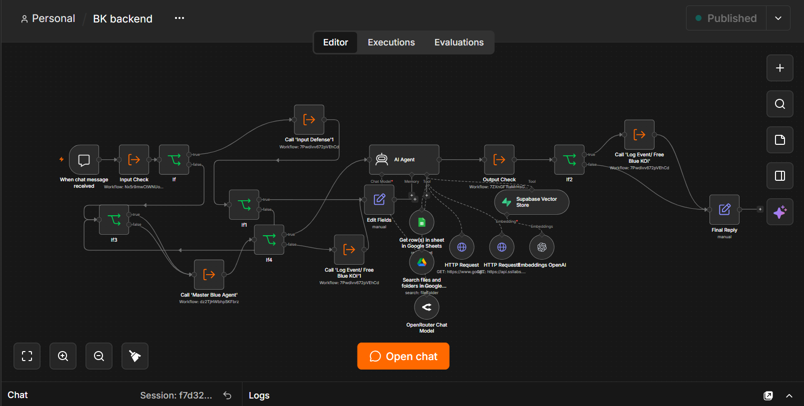

Backend AI Agent
The core system
n8n
Google Sheets
Supabase
OpenAI
OpenRouter
Google Drive
Problem
During my internship, the team needed a way to communicate cybersecurity findings and alerts to non-technical members — something clear enough that no security background was required to understand what was happening.
Architecture
Built in n8n — connects to the security monitoring pipeline and routes findings out to Telegram, with results logged to a spreadsheet.

My Role
Built the agent to send out alerts based on cybersecurity-related findings and issues as they came up.
Outcome
Sends security alerts via Telegram and logs to a spreadsheet what was run and which workflow is protecting against the penetration testing.